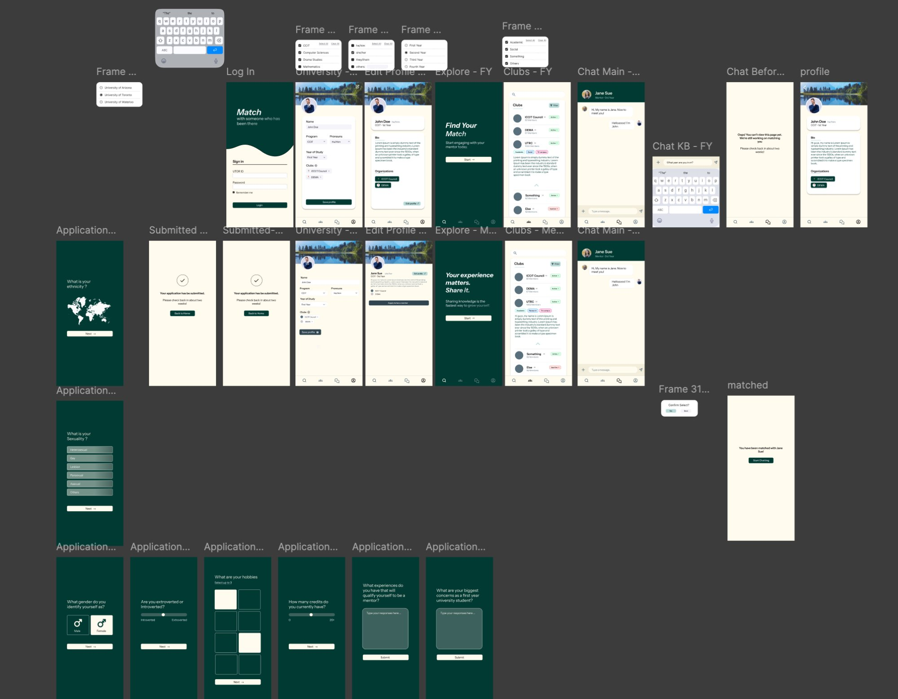

Match — First-Year Mentorship App
A B2B mentorship platform designed for universities to reduce first-year attrition.
The Prototype
Below is a full overview of the Figma prototype screens we designed during and after the designathon. The flows cover institution selection, login, application forms for both mentors and mentees, the explore feed, clubs directory, chat, profile editing, and the matched confirmation screen.

The Problem
First-year university students have one of the highest attrition rates of any student cohort. For universities, this isn't just a pastoral concern — every student who drops out represents tens of thousands of dollars in lost tuition revenue. Despite this, most institutions rely on orientation week and passive club fairs as their primary retention strategy.
The research showed something more specific: students don't leave because academics are too hard. They leave because they feel invisible. No one in their program, no upper-year guidance, and nowhere to turn when they hit a wall in week six.
Commercial Framing
The core commercial insight: universities already have the resource they need sitting in their second, third, and fourth-year students. Match doesn't add headcount or cost. It organizes existing human capital into a structured retention system and gives institutions a measurable engagement metric they didn't have before.
What Went Wrong — And What I Learned
I'll be honest about what actually happened in that room. We had strong ideas. The thinking was there. But we shipped a presentation that tried to show everything instead of leading with the one insight that made Match worth building. The judges saw a club discovery app with mentorship bolted on. That wasn't the product we designed — it was the product our presentation accidentally described.
Part of that was a communication failure inside the team. I worked on the Figma prototype alongside one teammate. Another handled the slides independently. We all shared the same big idea — but we never stopped to align on the details before we walked into the room.
The other lesson: lock the one thing the product does and never let it drift. If I walked into that room again, I'd spend the first 30 minutes writing one sentence: Match helps first-year students find an upper-year mentor who took the same path they're on. Then I'd make sure everyone on the team could say it before anyone opened Figma.
What I'd Do Differently
If I had two weeks, I would have run structured interviews with five to eight first-year and upper-year students. The single question I'd have led with: "Was it academic pressure or social disconnection that almost broke you in first year?" The answer determines whether Match is solving the right problem or a comfortable-sounding one.
I'd also have defined one north star metric from day one: the percentage of matched pairs who have at least one real conversation in their first 30 days. Not sign-ups. Not matches. Conversations. That's the only proof the product is doing the one thing it promised.